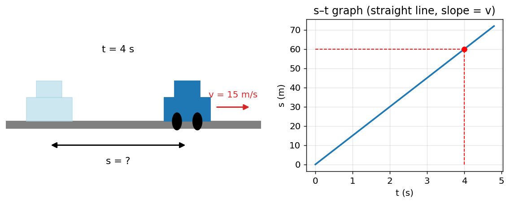
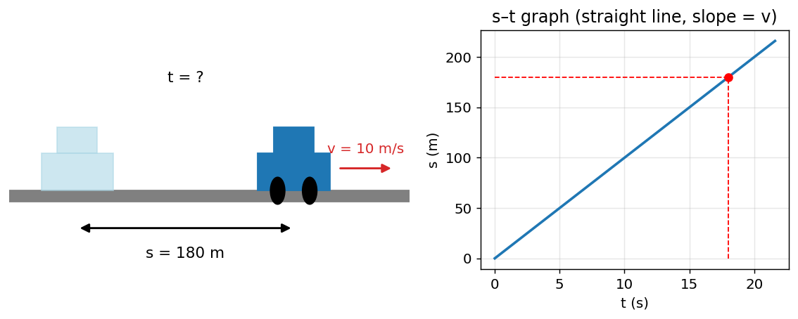
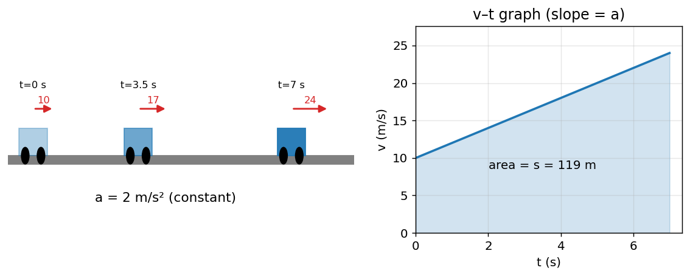
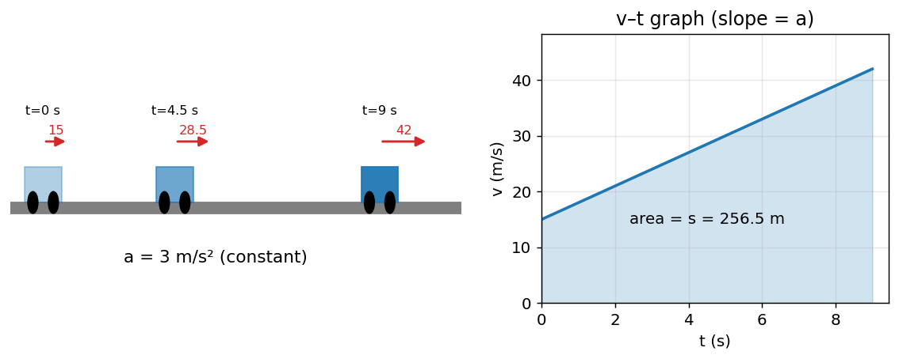
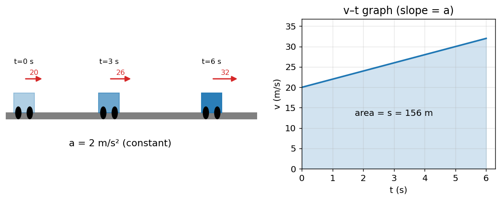
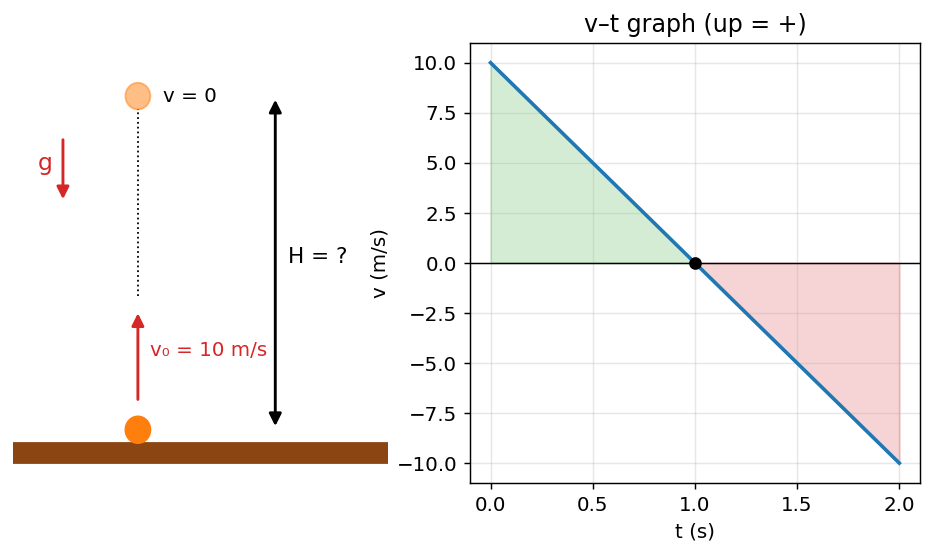
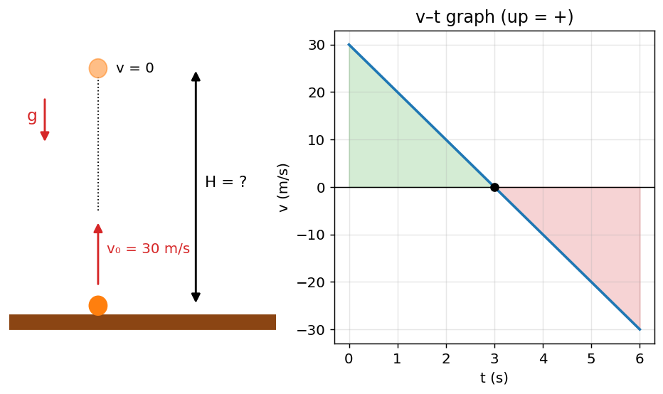
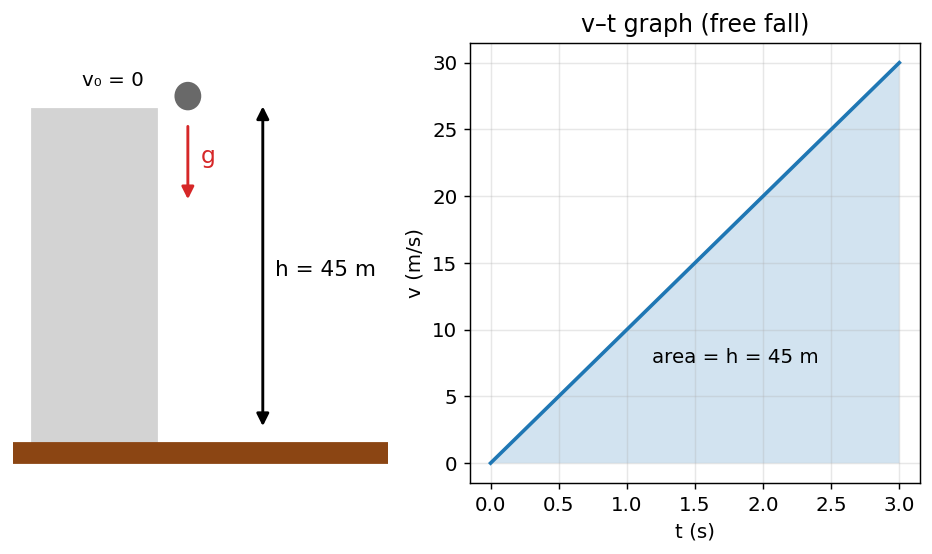

ແບບຝຶກຫັດຟີຊິກ: ກົນສາດ (ການເຄື່ອນທີ່)
ບົດທີ 1: ການເຄື່ອນທີ່ຊື່ສະໝໍ່າສະເໝີ
ຂໍ້ 1. ລົດຄັນໜຶ່ງແລ່ນດ້ວຍຄວາມໄວຄົງທີ່ 30 m/s ເປັນເວລາ 20 s. ຈົງຄິດໄລ່ໄລຍະທາງທີ່ລົດແລ່ນໄດ້ ແລະ ແຕ້ມກຣາຟ s–t.
ເບິ່ງວິທີແກ້ ແລະ ຄໍາຕອບ
ໃຊ້ສູດ s = v·t
s = 30 × 20 = 600 m
ຄໍາຕອບ: s = 600 m
ຂໍ້ 2. ລົດຄັນໜຶ່ງແລ່ນດ້ວຍຄວາມໄວຄົງທີ່ 10 m/s ເປັນເວລາ 18 s. ຈົງຄິດໄລ່ໄລຍະທາງທີ່ລົດແລ່ນໄດ້ ແລະ ແຕ້ມກຣາຟ s–t.

ເບິ່ງວິທີແກ້ ແລະ ຄໍາຕອບ
ໃຊ້ສູດ s = v·t
s = 10 × 18 = 180 m
ຄໍາຕອບ: s = 180 m
ຂໍ້ 3. ລົດຄັນໜຶ່ງແລ່ນດ້ວຍຄວາມໄວຄົງທີ່ 20 m/s ເປັນເວລາ 14 s. ຈົງຄິດໄລ່ໄລຍະທາງທີ່ລົດແລ່ນໄດ້ ແລະ ແຕ້ມກຣາຟ s–t.

ເບິ່ງວິທີແກ້ ແລະ ຄໍາຕອບ
ໃຊ້ສູດ s = v·t
s = 20 × 14 = 280 m
ຄໍາຕອບ: s = 280 m
ບົດທີ 2: ການເຄື່ອນທີ່ຊື່ປ່ຽນແປງສະໝໍ່າສະເໝີ
ຂໍ້ 1. ລົດເລີ່ມຕົ້ນດ້ວຍຄວາມໄວ 10 m/s ແລ້ວເລັ່ງຄົງທີ່ 3 m/s² ເປັນເວລາ 7 s. ຈົ່ງຄິດໄລ່ (ກ) ຄວາມໄວສຸດທ້າຍ (ຂ) ໄລຍະທາງທີ່ແລ່ນໄດ້ ແລະ ແຕ້ມກຣາຟ v–t.

ເບິ່ງວິທີແກ້ ແລະ ຄໍາຕອບ
(ກ) ໃຊ້ສູດ v = u + a·t
v = 10 + 3×7 = 31 m/s
(ຂ) ໃຊ້ສູດ s = u·t + ½·a·t²
s = 10×7 + ½×3×7² = 143.5 m
ກວດຄືນ: s = (u+v)/2 · t = (10+31)/2 × 7 = 143.5 m
ຄໍາຕອບ: v = 31 m/s, s = 143.5 m
ຂໍ້ 2. ລົດເລີ່ມຕົ້ນດ້ວຍຄວາມໄວ 15 m/s ແລ້ວເລັ່ງຄົງທີ່ 5 m/s² ເປັນເວລາ 8 s. ຈົ່ງຄິດໄລ່ (ກ) ຄວາມໄວສຸດທ້າຍ (ຂ) ໄລຍະທາງທີ່ແລ່ນໄດ້ ແລະ ແຕ້ມກຣາຟ v–t.

ເບິ່ງວິທີແກ້ ແລະ ຄໍາຕອບ
(ກ) ໃຊ້ສູດ v = u + a·t
v = 15 + 5×8 = 55 m/s
(ຂ) ໃຊ້ສູດ s = u·t + ½·a·t²
s = 15×8 + ½×5×8² = 280 m
ກວດຄືນ: s = (u+v)/2 · t = (15+55)/2 × 8 = 280 m
ຄໍາຕອບ: v = 55 m/s, s = 280 m
ຂໍ້ 3. ລົດເລີ່ມຕົ້ນດ້ວຍຄວາມໄວ 15 m/s ແລ້ວເລັ່ງຄົງທີ່ 5 m/s² ເປັນເວລາ 8 s. ຈົ່ງຄິດໄລ່ (ກ) ຄວາມໄວສຸດທ້າຍ (ຂ) ໄລຍະທາງທີ່ແລ່ນໄດ້ ແລະ ແຕ້ມກຣາຟ v–t.

ເບິ່ງວິທີແກ້ ແລະ ຄໍາຕອບ
(ກ) ໃຊ້ສູດ v = u + a·t
v = 15 + 5×8 = 55 m/s
(ຂ) ໃຊ້ສູດ s = u·t + ½·a·t²
s = 15×8 + ½×5×8² = 280 m
ກວດຄືນ: s = (u+v)/2 · t = (15+55)/2 × 8 = 280 m
ຄໍາຕອບ: v = 55 m/s, s = 280 m
ບົດທີ 3: ການຕົກຕາມລໍາພັງ
ຂໍ້ 1. ໂຍນລູກບານຂຶ້ນເທິງຕາມແນວຕັ້ງດ້ວຍຄວາມໄວຕົ້ນ 30 m/s (g = 10 m/s², ບໍ່ຄິດຄວາມຕ້ານທານອາກາດ). ຈົ່ງຄິດໄລ່ (ກ) ເວລາທີ່ລູກບານຂຶ້ນເຖິງຈຸດສູງສຸດ (ຂ) ຄວາມສູງສູງສຸດ (ຄ) ເວລາທັງໝົດຈົນກັບມາຈຸດເດີມ.

ເບິ່ງວິທີແກ້ ແລະ ຄໍາຕອບ
(ກ) ທີ່ຈຸດສູງສຸດ v = 0, ໃຊ້ v = v₀ − g·t
t = v₀/g = 30/10 = 3 s
(ຂ) ໃຊ້ສູດ v² = v₀² − 2·g·H
H = v₀²/(2g) = 30²/(2×10) = 45 m
(ຄ) ເວລາຂຶ້ນ = ເວລາລົງ
T = 2×3 = 6 s
ຄໍາຕອບ: t = 3 s, H = 45 m, T = 6 s
ຂໍ້ 2. ໂຍນລູກບານຂຶ້ນເທິງຕາມແນວຕັ້ງດ້ວຍຄວາມໄວຕົ້ນ 40 m/s (g = 10 m/s², ບໍ່ຄິດຄວາມຕ້ານທານອາກາດ). ຈົ່ງຄິດໄລ່ (ກ) ເວລາທີ່ລູກບານຂຶ້ນເຖິງຈຸດສູງສຸດ (ຂ) ຄວາມສູງສູງສຸດ (ຄ) ເວລາທັງໝົດຈົນກັບມາຈຸດເດີມ.

ເບິ່ງວິທີແກ້ ແລະ ຄໍາຕອບ
(ກ) ທີ່ຈຸດສູງສຸດ v = 0, ໃຊ້ v = v₀ − g·t
t = v₀/g = 40/10 = 4 s
(ຂ) ໃຊ້ສູດ v² = v₀² − 2·g·H
H = v₀²/(2g) = 40²/(2×10) = 80 m
(ຄ) ເວລາຂຶ້ນ = ເວລາລົງ
T = 2×4 = 8 s
ຄໍາຕອບ: t = 4 s, H = 80 m, T = 8 s
ຂໍ້ 3. ໂຍນລູກບານຂຶ້ນເທິງຕາມແນວຕັ້ງດ້ວຍຄວາມໄວຕົ້ນ 10 m/s (g = 10 m/s², ບໍ່ຄິດຄວາມຕ້ານທານອາກາດ). ຈົ່ງຄິດໄລ່ (ກ) ເວລາທີ່ລູກບານຂຶ້ນເຖິງຈຸດສູງສຸດ (ຂ) ຄວາມສູງສູງສຸດ (ຄ) ເວລາທັງໝົດຈົນກັບມາຈຸດເດີມ.

ເບິ່ງວິທີແກ້ ແລະ ຄໍາຕອບ
(ກ) ທີ່ຈຸດສູງສຸດ v = 0, ໃຊ້ v = v₀ − g·t
t = v₀/g = 10/10 = 1 s
(ຂ) ໃຊ້ສູດ v² = v₀² − 2·g·H
H = v₀²/(2g) = 10²/(2×10) = 5 m
(ຄ) ເວລາຂຶ້ນ = ເວລາລົງ
T = 2×1 = 2 s
ຄໍາຕອບ: t = 1 s, H = 5 m, T = 2 s